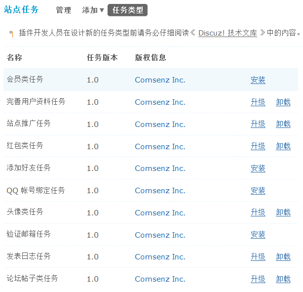

8.10. 站点任务¶
站点任务
站点任务功能，通过简单的设置，就可以对用户起到较强的引导作用，让用户上传自己的头像、让用户使用论坛推广、完成发布帖子、添加好友等动作，使用户在申请任务 => 完成任务 => 获得奖励过程中，持续不断的对网站投入新鲜感和热情度。也使得新用户缩短了对网站的适应时间，快速的融入站点中。
操作路径：【后台】=>【运营】=>【站点任务】
一、安装任务
在管理中心 => 运营 => 站点任务 => 任务类型中，系统内置了 10 类论坛任务，包括：会员类任务、完善用户资料任务、站点推广任务、红包类任务、添加好友任务、QQ 帐号绑定任务、头像类任务、验证邮箱任务、发表日志任务和论坛帖子类任务，站长可以根据站点需要自由选择在站点中安装哪一类的任务，安装之后，可以继续对任务进行升级也可以御载任务。
点击“安装”即可自动安装成功。
二、添加任务
安装了的任务会在添加菜单的下拉框中显示，站长可添加新任务。下面以添加头像类任务为例，对任务添加的过程进行说明
选择添加头像类任务后，根据站点的实际需求填写任务名称、任务描述、任务图标、上线/下线时间、任务间隔周期、任务奖励及对申请任务的用户组和人数限制后，提交即建立了新的站点任务。
任务图标：留空则使用默认图标 .. image:: img/tasks_6.gif ，也可以自定义图标，将图标文件上传到 static/image/task/ 目录，这里填写图标文件名即可，建议图标文件尺寸为 64 x 64。
上线时间：指的是任务开始时间，留空表示任务立即开始。
下线时间：任务结束时间，结束后会员将无法申请此任务，留空表示不限制下线时间。
任务间隔周期单位：设置任务间隔周期的计算单位 小时：表示指定小时后可再次申请，间隔周期填写间隔的小时数 天：表示指定天后可再次申请，间隔周期填写间隔的天数 周：表示在每周指定时间(周一到周日)后才可再次申请，间隔周期填写数字 1 (周一) 到 7 (周日) 月：表示在每月指定日期后才可再次申请，间隔周期填写数字 1 到 29、30、31
任务间隔周期：留空表示一次性任务，否则为周期性任务，比如这里填写 1 ，上面的任务间隔周期单位选择“天”表示每天可以申请该任务。
任务奖励：奖励的类型有：积分、道具、勋章及自定义用户组，其中，道具和勋章需要开启相应功能。开启方法参考“道具中心”和“勋章中心”的详细说明。
用户组限制：设置哪些用户组的会员允许申请此任务。
早请人次上限：当完成此任务的人次达到这个数值时，系统将自动拒绝新的申请，0 或留空为不限制。
三、启用任务
添加任务后，可以在任务管理中，选择是否开启站点任务，及设置任务是否可用和任务的显示顺序。对于启用的任务，站点内凡是满足申请条件的会员就可以进行申请，并通过完成站点任务获取相应的奖励了。
在这里也可以编辑和删除任务列表中的任务。
四、会员在前台申请任务
当任务设置完成后，有权限的会员即可申请该任务，如下图所示：

会员直接点击“立即申请”即可申请新的任务了。